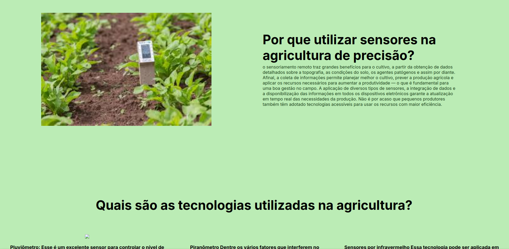
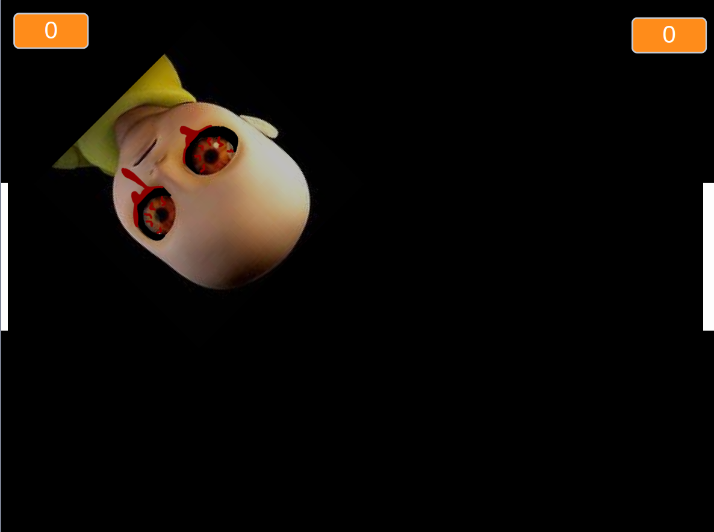
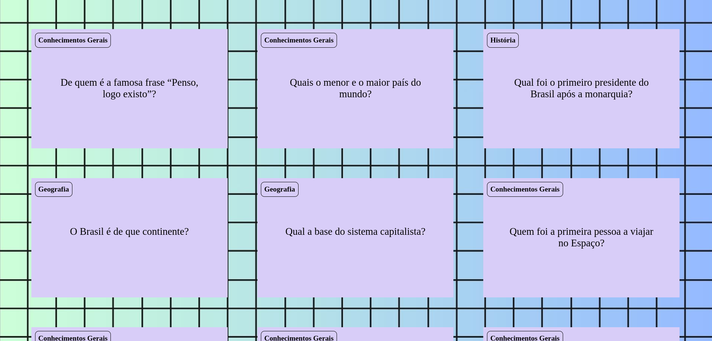

Meus projetos

Agrinho:
Este projeto é uma página web que apresenta informações sobre o projeto agrinho, incluindo informações de como desenvolvi.

Yellowpong:
Este projeto é um jogo interativo com seres humanos e softwares, onde o objetivo é pontuar a maior quantidade de pontos

Flashcard:
Este projeto cria uma experiência interativa educativa sobre matérias escolares, permitindo aos usuários explorar informações sobre conhecimentos gerais, geografia, entre outros.